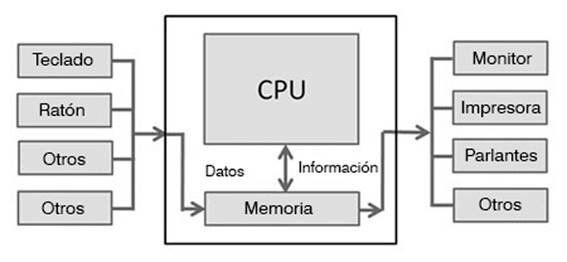

Desktop
Es también llamado ordenador o computador, se trata de computadoras voluminosas, relativamente económicas y con excelentes capacidades de escalamiento debido a su diseño (disco duro, motherboard, RAM, procesador). Permite la conexión de periféricos de manera externa (pantalla, ratón, teclado y opcionalmente bocinas y cámara Web, etc.)
es un tipo de computadora personal, diseñada y fabricada para ser instalada en una ubicación fija, como un escritorio o mesa, a diferencia de otras computadoras similares, como las portátiles.
Características de Desktop
- La característica principal de este tipo de computadoras era que en su interior se incluía un procesador basado en el conjunto de instrucciones x86
- posee el gabinete también llamada a veces CPU. En su interior tienes la placa base, el micro, la memoria RAM y el disco duro.
- El tipo de Pantalla en LCD y posee un amplio tamaño
- Computadoras de oficina utilizadas por los empleados de una empresa
Ventajas de Desktop
- Las computadoras de escritorio tienen el beneficio de ser versátiles en cuanto a sus actualizaciones
- Integración de partes asombrosa.
- Las computadoras de escritorio normalmente cuestan menos que las portátiles con especificaciones similares
Desventajas de Laptop
- La principal desventaja de una computadora de escritorio es la cantidad de espacio que ocupa y el esfuerzo adicional que se requiere para moverla
- Debido a que las computadoras de escritorio son estacionarias, se alimentan de la energía eléctrica todo el tiempo.
- Facilidad en realizar limpieza interna.
Arquitectura
Sitios Web Laptop y Desktop
- Laptop Web
referencia a Caracteristicas de laptop - Desktop Web
Cracteristicas y precios de Desktop - Marcas Reconocidas
Marcas mas Reconocidas a nivel Mundial - Desktop Conoce más
Desktop Marca dell